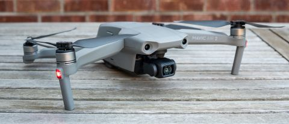
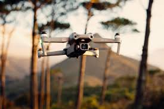
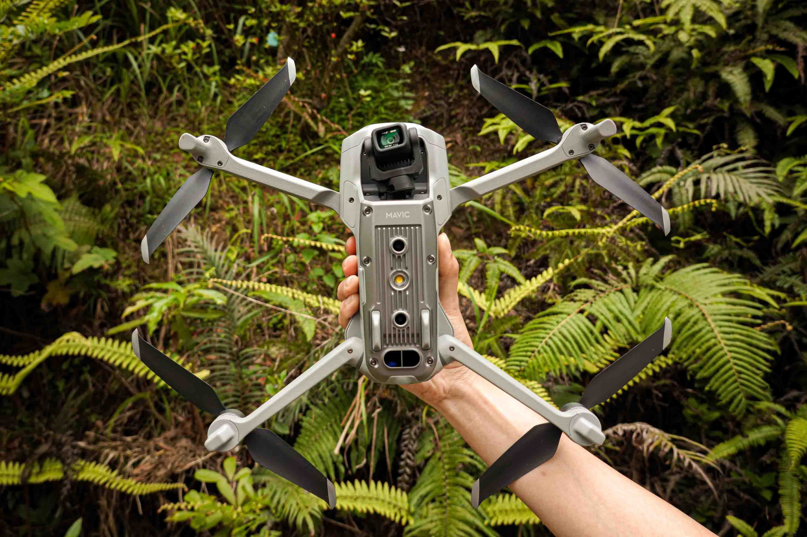
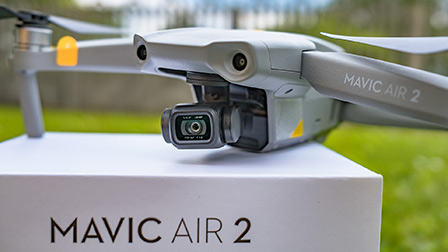
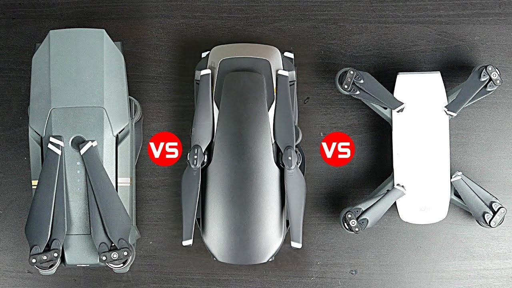
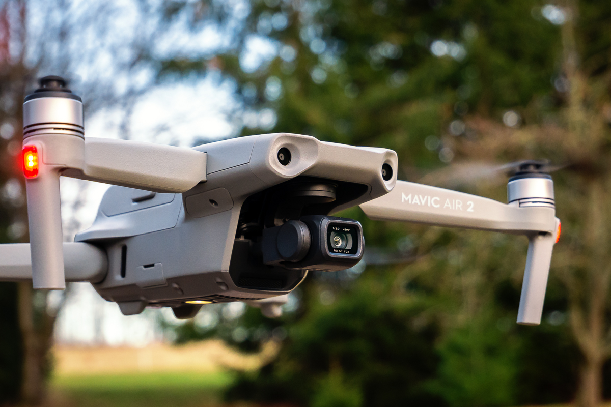

|
|
Home | About | Reviews | Articles | Contact |
| Is The DJI Mavic Air The Best Drone For Travel? |
| Mavic Air – Main Specs | |
| Ok for those looking at everything from a tech perspective here’s a quick lowdown of the main Mavic Air specifications so you can have a little geek out : • Weight – 430g • Dimensions folded – 168x83x49mm • Dimension unfolded – 168x184x64mm • Max speed – 28.8kph • Max speed (sport mode) – 68.4kph • Max flight time – 21mins • Max distance (phone only) – 80m • Max distance (controller) = 4km • Camera – 12mp (and 32mp sphere panoramas) Max Video Resolution: • 4k = 30 frames per second • 2.7k = 60 frames per second • 1080 = 120 frames per second • 720 = 120 frames per second |
 |
| Small Drone With Big News | |
| Despite being almost as small as your smartphone the Mavic Air is packed full of incredible tech and although some of this is already standard across the DJI drone range the Air did come with some significant new upgrades.mavic air review best drone for travel dji backpacking byron bay surfing surf-1-2. There’s A Lot Packed Into It To make things simple here are some of my top features and highlights so you can easily see whats’s new under the hood. It’s amazing that all of the above features come packed into a drone that weighs nearly half of the Mavic Pro and folds down into a size that’s actually smaller that the Spark! [Tweet “”all of the above features come packed into a drone that weighs nearly half of the Mavic Pro” #MavicAir”]. |  |
| What’s The Mavic Air Like To Fly? | |
| One of my biggest concerns about the Mavic Air was how it was going to handle in the air given its size.I’ve got used to flying the Pro which is incredibly stable and can handle a fair bit of wind without too many issues and stability was my biggest issue when reviewing the Spark – it just didn’t fly how I needed it to fly and it did feel less stable.I shouldn’t have been worried though – the way the Air handles mirrors the Pro perfectly! Basically if you’re used to flying the Mavic Pro or any of the Phantom series you’ll barely notice any change in flight style when using the Air. |  |
| How Much Does Mavic Air Cost? | |
| Well admittedly yes, this isn’t going to be the cheapest item on your packing list, but you knew that already! The Mavic Air starts at £769 ($799USD or $1299AUD) or the Mavic Air Fly More Combo is currently reduced to £949 ($999USD or $1599AUD) – which then includes a bunch of extras like 2 extra batteries (so 3 total), some extra propellers, carry bag (which is surprisingly compact and beautifully made!) and a battery charging hub. |  |
| Mavic Air v Spark and Mavic Pro/Platinum | |
| When it comes to the best drone for travel there are now 3 main contenders to choose from in the DJI range – the Mavic Air, Mavic Pro/Plantinum (check out my full Mavic Pro review here) and the Spark (check out my full Spark review here).When it comes to specs both the Air and the Pro blow the Spark clean out of the water, both shooting 4k and also having the 3 axis gimbal which ultimately results in much smoother and clearer footage. |  |
| So What Is The Best Drone For Travel | |
| Honestly I’m going to straight out say that the Mavic Air is now the best drone for travel.The combination of weight and size alone make it an incredible drone to travel with but add to that with the same technical spec as the Mavic Pro and the new addition of the backward sensors and it’s a no brainer on the decision. Right now the Mavic Air is my new favourite drone to travel with (I’ve gone as far as selling my Mavic Pro already!) and it’s a welcome addition to my camera kit! So if tech specs are your main priority hold onto your Pro and upgrade to the Pro 2 later in the year. But for anyone else – the Mavic Air is more than enough drone to capture all your adventures! |  |